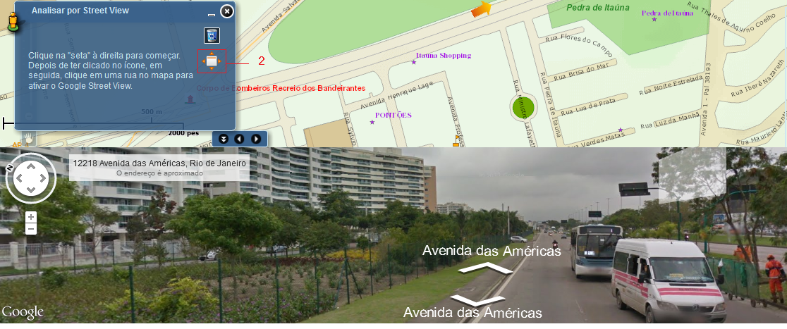

Visualizar Maximizado
Visualiza imagem do street view em outra janela de forma maximizada.
Passos para visualizar maximizado:
1 - Realizar os passos do Iniciar Street View;
2 - Clicar sobre o botão "Visualizar Street View em browser maximizado".
